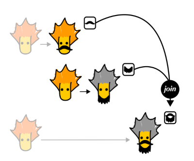
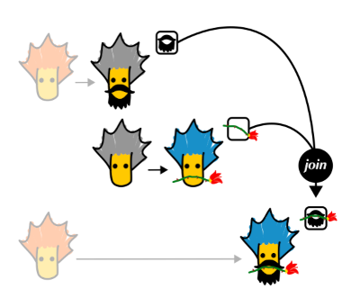
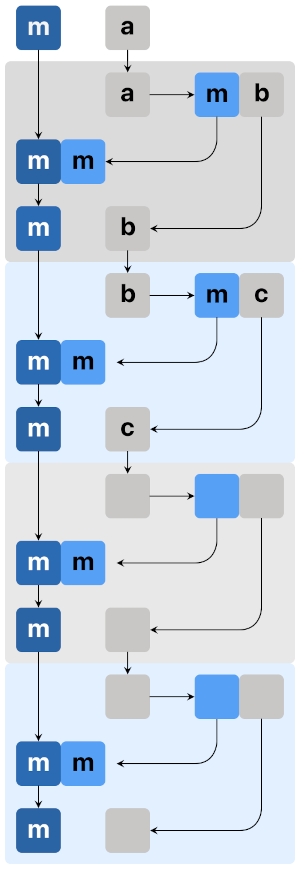

모나드, 같음 - m (m a)와 m a는 얼마나 다를까?
모나드로 가는 도중 생각해 보면 도움이 될 것 같은 내용들을 정리했습니다.
처음 모나드를 접하시는 분들보다는 한 번쯤 모나드 설명을 봤던 분들에게 적합한 글일 것 같습니다.
Functor와 Maybe 동작에 대한 지식이 있으면 도움이 됩니다.
주의 )
모나드의 독특함 때문에 수많은 모나드 튜토리얼들이 올라오는데, 잘못된 이해로 남긴 글을 부리토 Burrito라고 부르는 것 같습니다. 이 글도 부리토 중에 하나일 수 있습니다. 그렇게 되지 않기 위해 노력하지만 모든게 확실한 내용이라 장담할 수 없습니다. 여기 글에서 무언가를 알게 된다면, 꼭 다른 분들과 상의해서 검증하시기 바랍니다.
요약
Effect를 합성할 수 있는return,join이 있어, 펑크터m을 여러번 적용한m (m (m ...))을m을 한 번 적용한 것으로 표현 가능한 구조를 모나드라 합니다.a -> m b타입의 함수를 합성할 때m부분을 합성하기 위해 모나드 구조로 만들어 해결합니다.
위 문장이 이해가 되시는 분은 이 글을 보시지 않아도 됩니다.
- 펑크터로 변환한 타입과 변환 전 타입의 관계
- 펑크터 타입이 같이 있는 함수
- 서로 다른 정도를 표현하는 방법: 함수
- 역변환Inverse이 없는데, 어떻게 같게 볼 수 있을까?
m a에서a로 돌아오기?- 합성Composition : 특정 작업을 하는 동안만은 같은 걸로 보기
- 이미
fmap을 갖고 있다 join- m a와 a가 다른 문제를 m a -> a 아니고, 왜 m (m a) -> m a를 볼까?
- Bind
(>>=) - 하스켈에서
join구현 - 결론
- 모나드가 필요함을 눈치 채는 예시
- 카테고리 이론으로 가는 힌트
- 도움을 주신 분들
- 여기 글은 “독”일수도 있다
- Appendix
하스켈에서 함수의 합성composition은 정말 중요합니다. 시작과 끝이라고 봐도 될 정도로 핵심 근간을 이루는 개념입니다. 모나드는 특정 타입의 함수를 연이어 합성하려면 필요하게 되는 구조입니다. 대부분 모나드 자료는 합성에서 설명을 풀어 나갑니다. 하지만, 여기서는 “합성” 자체보다, 합성을 하기 위해 필요한 “같음”에 주목했습니다.
합성은 첫 함수의 결과값과 이어지는 두 번째 함수의 입력값이 서로 같아야 한다는 생각에서 시작했습니다. 아니면, 적어도 같게 만들 수 있는 함수가 있다면, 복잡한 테크닉 없이 그냥 이 함수를 적용하기만 하면 된다고 생각했습니다.
이 글의 결론부터 말하면, 컴비네이터를 이용한 합성은 접점의 타입이 꼭 같아야 할 필요가 없습니다. 각 함수들의 결과를 잃어버리지 않을 수만 있다면 합성이 가능합니다.
이 글의 부제는 m (m a)와 m a는 얼마나 다를까입니다.
펑크터로 변환한 타입과 변환 전 타입의 관계
몸무게를 표현하기 위해 Int 타입 값이 필요한데, 몸무게가 변할 때마다 이유를 기록해 두고 싶습니다.
data HasLog a = HasLog a [String]
type Weight = HasLog Int이럴 때 Int에서 Weight로 “변환Transform” 되었다고 말합니다. Int용 (+), (-)는 이미 있으니 이 함수를 그대로 써서 새로운 타입에 적용하고 싶습니다. (+), (-)를 다시 정의하지 않고, 기존 함수들을 사용할 때, 바로 사용하지 않고 중간에 끼어들어 Weight에서 Int를 꺼내주는 브로커 함수를 만들면 됩니다. (이 함수를 fmap이라 부릅니다.) fmap 함수를 Weight 타입에서 쓸 수 있도록 추가해 주는데, 이럴 때 “펑크터 구조를 추가했다 또는 변환했다”라고 합니다.
이런식으로 하스켈에서 프로그램을 작성하다 보면, 수많은 “타입을 갑싼 타입”들이 생기게 되는데, 이들은 기존 데이터와 아주 다른 것이 아닙니다. 위 몸무게의 예는 Int가 가지는 속성은 똑같이 가지고 있고, 추가적으로 [String]을 갖고 있다고 봅니다. Int를 처리하던 함수들은 모두 그대로 쓰고 싶습니다. 그럴 때 fmap을 추가한 타입들을 펑크터라고 부릅니다. 여기 글에서 주목하는 부분은 바로 몸무게 Weight와 Int의 다른(닮은) 정도입니다.
“Weight와 Int는 다르지만, Int 성질은 둘 다 가지고 있는 닮은 타입이다.”
펑크터는 a 타입과 “닮은” f a 타입을 만들어 냅니다.
모나드는 아무 타입 둘을 다루는 게 아니라, 닮은 타입 둘에 관한 구조입니다.
펑크터 타입이 같이 있는 함수
이렇게 펑크터를 정의하면 당연히 펑크터로 변환된 타입들을 처리하는 함수들이 필요합니다. 펑크터가 적용되어 있는 타입과 관련된 함수는 3가지 형태가 있을 수 있습니다. (하스켈은 unary 함수만 있으니, 그 것만 보면 됩니다.) 하스켈 함수들은 합성이 가능해야 효용성이 높아집니다. 각 형태들의 합성을 생각해 보면
m a -> m b
m a -> b
a -> m b우선 첫 번째는 입력과 출력 모두 같은 펑크터 적용이 되어 있으니 a -> b , b -> c 함수를 합성하듯 간단히 함수 컴포지션 (.)으로 연결할 수 있습니다.
(m a -> m b) . (m b -> m c)두 번째는 입 출력이 다른 펑크터 타입이라 함수 컴포지션으로 해결할 수 없습니다. 이건 모나드가 익숙해진 후 코모나드 글에서 보도록 하겠습니다.
마지막 세 번째도 입력과 출력이 다른데 어떻게 연결하면 좋을까요?
(a -> m b) ??? (b -> m c)m b와 b 둘이 같은 걸로 볼 수만 있다면, 아무 문제 없을텐데요.
※ 왜 a -> m b 타입이 중요한지 상태 “개념”은 함수형에도 있다 글을 참고하시면 도움이 됩니다.
Q.
m a -> m b도a와b가 다르니 다른 타입 아닌가요?
A. 여기서 같다 다르다의 관심사는 한 함수 내에서가 아니라, 다음 함수와 합성할 때 접점에서 만나게 되는 타입을 말합니다.m a -> m b는m b -> m c함수를(.)으로 연결할 때m b와m b가 만납니다.
서로 다른 정도를 표현하는 방법: 함수
3과 5가 얼마나 다를까요?
`3`은 `0`에서 `3`만큼 떨어져 있고, (+3)
`5`는 `0`에서 `5`만큼 떨어져 있다. (+5)기준에서 부터 측정된 값들을 서로 계산해서 둘의 다른 정도를 구합니다.
“(5 - 3) = 2, 또는 (3 - 5) = -2”
“3에서 5는 2만큼 떨어져 있다.”
둘 중 하나를 기준으로 잡을 수도 있습니다. 기준을 만들고 특정 연산(함수)을 이용해서 대상들을 비교하면, 같은지 다른지 좀 더 모호하지 않게 얘기할 수 있게 됩니다.
a 와 m a는 다릅니다. “얼마나” 다를까요?
m a를 기준으로 잡고, a가 얼마나 다른지 나타내는 함수가 있으면, 함수만큼 다르다고 말할 수 있습니다. (기준을 a가 아닌 m a로 잡은 이유는, 우리가 필요로 하는 정보를 모두 갖고 있는 타입은 m a인데, 함수들이 a 타입을 받아 문제가 생깁니다. a -> m b 함수를 거치고 나서 원하는 결과는 b가 아니라 m b입니다.)
역변환Inverse이 없는데, 어떻게 같게 볼 수 있을까?
아래와 같이 동작하는 함수가 있습니다.
A와 B는 서로 전사Surjective이며, 단사injective로 연결된 전단사bijective 관계입니다. f: A -> B 함수가 있고, 돌아 오는 g: B -> A 함수(f의 역함수)도 있습니다. A를 넣어줘야 할 곳에 g(B의 원소)를 해서 넣어 줄수도 있고, B를 넣어줘야 할 곳에 f(A의 원소)를 해서 넣어줘도 됩니다. ※ 이런 관계를 Isomorphic 관계라 합니다. 서로 다른 정도를 표현하는 함수를 적용하면 바로 같은 것으로 바뀌고 있습니다.
A의 1과 2는 B의 a로 연결되고,
A의 3은 B의 b로 연결되었습니다.
f: A -> B 로 갔다가 다시 g: B -> A 으로 돌아올 수 없습니다. a에서 출발하면 1로 가야 하는지 2로 가야 하는지 알 수 없습니다. c에서 출발해도 마찬가지로 어디로 가야할지 알 수 없습니다. 이럴 때는 아무 조치 없이는 둘이 같은 것으로 볼 방법이 없습니다. 하지만, 다음 방법을 통해서 마치 돌아갈 수 있는 것 처럼 할 수 있습니다. 예를 들어, 만일 f로 B의 a에 도착할 때마다 1에서 왔는지, 2에서 왔는지 기록하는 보조 함수를 만들고 c가 어떤 수와 연결만 되면 되는 상황일 경우, g를 이용해 바로 올 수는 없지만, 이 보조 함수 만들기에 따라서 마치 전단사 함수처럼 동작할 수도 있습니다. (꼭 전단사로 만들어야 되는 건 아닙니다. 때에 따라 꼭 함수 관계가 아니고, 관계만 있는 걸 아는 것으로 충분할 때도 있습니다.) 어쨌든, 이럴 때는
“(현재 필요한 정도에서는)A는 B와 (g + 보조 함수)를 적용하면 문제 없을 만큼 다르다” 고 말할 수 있습니다.
하지만 항상 보조 함수를 만들 수 있는 건 아닙니다.
m a에서 a로 돌아오기?
Maybe 펑크터가 추가한 구조effect
※ 펑크터를 말할 땐 타입 생성자를 f, 모나드를 말할 때는 m으로 표기합니다.
※ m a에서 a로 돌아갈 때 가지고 있을 수 없는 정보를 effect라 합니다. (보통 a에서 m a로 가며 생기는 것들로 정의를 하는데, 여기서는 거꾸로 보는게 이해에 도움이 됩니다.)
펑크터는 오브젝트들만 매핑하는 게 아니라, 모피즘도 매핑해야 합니다. 오브젝트는 타입 생성자로 감싸서 변환하고, 모피즘은 fmap이란 함수를 통해서 변환합니다.
f a값에 적용해야 될 함수가 a -> b이면 f a와 a가 달라 적용할 수 없습니다. 마법은 없습니다. f a를 a로 바꾸든, a -> b를 f a -> b 또는 f a -> f b로 바꾸든 해야 합니다. 필요한 정보 구조(effect)를 모두 가지고 있는 타입은 f b이니, 이 정보들을 잃어버리지 않기 위해 f a -> f b 타입으로 만듭니다.
fmap :: Functor F => (a -> b) -> f a -> f b
-- tip: 여기서는 (a -> b) -> (f a -> f b) 보다는
-- (a -> b) 와 f a 를 받아 f b를 돌려주는 함수로 읽는게 더 직관적으로 보입니다.Functor 클래스의 fmap을 구현할 때는 단순히 타입만 변경하는게 아닙니다. f를 잠시 벗겨 낼때는, a에서 f a로 만든 이유effect를 반드시 여기서 처리해야 합니다. 펑크터는 감쌀 때는 대부분 편하게 감싸지만, 안쪽 것을 볼 때는 반드시 약속된 절차를 따라야 합니다. 펑크터 타입 생성자는 반드시 약속된 절차를 해야만 한다는 표시입니다.
Maybe 타입을 예로 들어 보겠습니다.
data Maybe a = Nothing | Just a -- 여기선 deriving (Eq, Ord)는 생략하고 볼게요 그럼 Int와 Maybe Int가 가진 오브젝트의 차이는
Int : ... -2, -1, 0, 1 , 2 ...
Maybe Int : ... Just (-2), Just (-1), Just 0, Just 1, Just 2 ...| NothingJust들이야 Int와 일대일 대응이 되지만, Int에는 없던 Nothing이라는 값생성자를 추가하여 Sum 타입으로 만들어 두었습니다. 하스켈에서 Sum 타입들은 모두 패턴 매칭으로 각 각 처리해야 합니다. 어느 한 값생성자라도 놓치면 런타임에 그 형태의 값이 들어오면 오류가 나기 때문에 모든 값 생성자에 대한 처리를 해두어야 합니다. Nothing처리를 추가하겠다가 Maybe를 벗겨 낼 때 반드시 하기로 한 약속입니다. 이 약속이 Maybe가 가진 effect입니다.
패턴 매칭
a -> b 함수는 어차피 effect에 적용하기 위한 함수가 아닙니다. effect는 잠시 다른데로 옮겨 두고, a -> b를 적용할 수 있는 것에만 적용하고, 다시 effect를 합치면 됩니다.
fmap _ Nothing = Nothing
fmap func (Just a) = Just (func a)눈여겨 볼 부분은 함수를 적용한 후의 결과 타입입니다. effect를 버리지 않으려면(Nothing을 잃어버리지 않으려면), b가 아니라 Nothing일 수도 있는 Maybe b 를 리턴해야 됩니다. a -> b 함수를 적용한 후 다시 effect가 있는 f a로 만들고 있습니다.
이제 Maybe a에 func :: a -> b 함수를 적용하려면 fmap func라고 써주면 하스켈이 인자 타입을 보고 알아서 Maybe의 fmap을 찾아와 적용해서 결과값 f b를 리턴하는 함수로 만듭니다. func1 :: a -> b, func2 :: b -> c, func3 :: c -> d 함수를 합성하려면 fmap func1 . fmap func2 . fmap func3으로 합성하면 됩니다.
f a -> f b
f b -> f c
f c -> f d같은 타입들끼리 만나고 있으니 문제가 없습니다. f a, f b, f c 모두 f를 가지고 있는, 즉 effect를 잃어버리지 않고 갖고 있는 타입들입니다.
여기서 fmap의 내부 동작을 보면 f a에서 a를 꺼내온 것으로 오해할 수 있습니다. 하지만 fmap의 결과는 f b입니다. 내부에서 일시적으로 effect를 분리해서 a를 대상으로 작업하지만, 가지고 있던 effect를 버리지 않는 한 최종 a만 단독으로 받을 수 없습니다.
만일 a -> b의 입력과 f a가 달라 f a를 a 로 만든 다음 a -> b 를 적용하면 결과값은 effect를 잃어버린 b입니다. 결과로 b를 받는다면 effect가 모두 사라진 상태니 f b와 다릅니다. effect가 살아 있는 그냥 b는 있을 수 없습니다. effect가 사라지지 않게 보조 함수가 도와주게 하더라도, 마지막 결과가 effect를 담을 곳이 없으면 어찌할 방법이 없습니다. 결론은, 둘은 같게 볼 방법이 없습니다. 그렇다면 a -> m b와 b -> m c에서 m b를 b로 만들 수 없으니 를 합성할 방법이 없는 것 아닐까요?
※ 같게 볼 수 있는 함수가 아니라 아예 inverseM :: m a -> a 가 존재한다면?1
지금부터는 모나드로 넘어가니 f를 m이라 표기하겠습니다.
물론 m a에 func :: a -> m b 함수를 적용할 때도 fmap func라고 써주면 됩니다. 단, 이 때는 합성에 문제가 생깁니다. func1 :: a -> m b, func2 :: b -> m c, func3 :: c -> m d 함수를 합성하려면 fmap만으로 해결이 되지 않습니다. fmap f의 결과는 m b가 아니라 m (m b)입니다.
m a -> m (m b)
m b -> m (m c)
m c -> m (m d)함수들을 합성할 수가 없습니다. 합성할 일이 없다면 펑크터의 fmap만으로 해결할 수 있지만, 합성을 해야 되면 다른 조치가 필요해졌습니다.
합성Composition : 특정 작업을 하는 동안만은 같은 걸로 보기
특정 작업을 하는 동안만 다음처럼 제약을 두었다고 생각해 봅시다. ※ “특정 작업을 하는 동안”이란 표현은 함수가 연이어 합성되어 있는 모양이 실행되는 동안을 말합니다. 예) working = act1 . act2 . act3
“함수는 함수와 바로 연결하지 못하고, 반드시 중간에 다른 접착 함수Combinator를 두어 연결 작업을 맡긴다.”
그러면, 위에서 봤던 둘이 달라서 생기는 문제들을 모두 컴비네이터 함수에 떠 넘길 수 있습니다. 뭔가 특별한 것 같지만, 사실 합성 (.) 연산자도 아래와 같이 정의되어 있는 컴비네이터 함수입니다.
(.) :: (b -> c) -> (a -> b) -> a -> c
(.) f g = \x -> f (g x)컴비네이터 함수가 여러 함수들을 연결해서 체인을 만드는 동안, 연결할 때마다 반복해서 처리하는 작업을 컨텍스트라 부릅니다. (.)은 컨텍스트가 없는 컴포지션이라고 말할 수 있습니다.
출력과 입력 타입이 같은 함수 합성을 할 때, 보통 (.)을 쓰는데, a -> m b 형태의 합성을 할 때만 쓸 다른 함수를 정의해서 (.)에는 없는 컨텍스트 작업을 추가합니다.
다시 Maybe를 가져와서 예를 들겠습니다. m a에 a -> m b를 적용하려면 두 가지 방법이 있을 수 있습니다.
m a를a로 만들고, 다른 함수가Nothing에 대한 처리를 도와주든지,
a -> m b를m a -> m b로 만들든지 해야 합니다.
이미 fmap을 갖고 있다
※ fmap “만” 갖고 있다고 해야 맞을 것 같습니다. fmap은 오브젝트만 변환하는게 아닌 모피즘도 변환합니다. 예를 들어 a -> m b를 펑크터 m으로 한 번 더 변환하면 m a -> m (m b)가 되는 걸 알고 있습니다. m a가 가지고 있던 effect를 잃어버리지 않으려면, a -> m b에 m a를 넣기 위해, 일단 m a -> m (m b)로 만드는 수밖에 없습니다.
위에서 봤던 것처럼 Maybe a와 a가 달라서 생기는 문제, 즉 추가된 Nothing 생성자 문제를 위해 또 함수를 만들 필요 없이, 이미 만들어져 있는 fmap을 가져옵니다. fmap의 내부를 들여다 보면
* a -> m b 함수와 m a를 받아,
* m a에서 m을 잠시 떼어내며, m a가 가지고 있던 effect를 따로 두고 (이걸 effect1이라 이름 붙이겠습니다.)
* a에 a -> m b 함수를 적용합니다. 그럼 결과 m b는 새로운 effect를 가지고 있게 됩니다. 이걸 effect2라 이름 붙이겠습니다.
* 남은 작업은 하나만 남았습니다. effect1과 effect2를 모두 잃어버리지 않고 다시 m b로 만들 수만 있다면, 또 다시 다른 b -> m c 모양의 함수와 연이어 합성 할 수 있게 됩니다.
Q. 만일 1번 방법
m a -> a으로 해결한다면m (m b)가 나오지 않아도 되는 것 아닐까요?
A. 컴비네이터 안에서m a에 있던 effect1을 떼어낸 후a에a -> m b를 적용하면 또 하나의 effect2가 생기는 건 마찬가지입니다.fmap을 이용해서a -> m b함수를m a -> m (m b)로 변환한 것과 표현만 다를 뿐이지 같은 절차입니다. (fmap내부에서 똑 같은 방법으로 진행됩니다.) 결론은 effect 두 개를 모두 살리려면m (m a) -> m a가 반드시 필요합니다.
join
-- join :: (Monad m) => m (m a) -> m a
-- 여기서는 아래로 단순화 해서 보겠습니다.
join :: m (m a) -> m a위와 같은 함수 join이 있다면, fmap으로 나온 결과에 적용하여 다시 m a가 되므로 연이어 합성할 수 있게 됩니다. join이 하는 일은 단순히 m 하나를 떼어내는 것이 아닙니다. join은 m a가 되며 생긴 effect1과 m (m a)가 되며 생긴 effect2 모두를 잃어버리지 않아야 합니다. 이를 위한 해결책이 바로 effect composition입니다. effect1과 effect2를 합쳐 하나의 effect로 만들어 m a에 다시 담아 둘 수 있으면 됩니다. 그게 불가능하면 모나드로 만들 수 없습니다.
※ effect를 합성할 때 effect의 id의 역할을 할 수 있게 만들어 주는 모나드의 return도 중요한 역할이지만, 반짝이는 센스가 들어가 있는 부분은 바로 여기 join입니다.
join이 effect를 잃어버리지 않게 합성해서 fmap의 결과를 다시 m a 형태로 만들어 주면 드디어 아래와 같이 컴포지션이 가능해집니다.
-- 실제 코드는 아니고, >>> 는 입출력을 의미합니다.
m a >>> join (fmap f a) >>> m b
m b >>> join (fmap g b) >>> m c
m c >>> join (fmap h c) >>> m dm a와 a가 다른 문제를 m a -> a 아니고, 왜 m (m a) -> m a를 볼까?
a -> m b와 b -> m c를 합성하면 effect는 m b, m c 두 번 생깁니다. m b와 b가 달라서 생기는 문제처럼 보이지만, 한 걸음 뒤에서 넓게 보면 사실 우리가 풀어야 될 문제는, 둘을 같게 보는게 아니라 두 번의 effect가 있는 걸, effect 하나와 같게 만드는 문제입니다.
[a -> m b] . [b -> m c] -----> [a -> m c]
a -> b . b -> c -----> a -> c
m . m -----> m
m . m -> m함수 타입만 봐서는 a -> m b의 출력 m b와 b -> m c의 입력 b를 맞춰야만 될 것 같지만, 함수의 작업 내용으로 보면 m . m 을 m 하나와 같게 보는 문제입니다. 접점에서 m b와 b가 만나는 건 어차피 컴비네이터가 일시적으로 해결하고, 진짜 문제는 작업 내용을 잃어버리지 않는 겁니다. (b로 가면 effect를 모두 잃어버립니다.)
애초에 이 문제는 m a와 a의 문제가 아니라, effect가 두 번 겹쳐지기 때문에 m (m a)와 m a의 문제입니다.
함수 합성을 바라 보는 조금은 다른 눈이 생긴 것 같지 않나요? 만나는 타입이 반드시 같지 않아도 필요한 정보만 유지할 방법만 보인다면 컴비네이터를 이용해 합성이 가능 할 수 있습니다.
Q.
m a -> a는 불가능한데,m (m a) -> m a는 왜 가능한가요?
A. 최종 결과값이a가 되면 effect를 담아 둘 곳이 아예 없습니다. 하지만m a라면 담아 둘 곳은 있는 상태입니다.fmap내부에는 입력으로 들어온m a의 effect와a -> m b에서 새로 만들어낸 effect, 이렇게 두 effect가 같이 있게 됩니다. 두 번의 effect를 어떻게 하나로 만들 방법만 있다면(effect algebra를 정의할 수 있다면) 하나로 만들어진effect는 다시m a에 담을 수 있습니다. 다시 말하지만 결과값이a이면 effect를 담아둘 곳이 없습니다.
effect가 필요 없어서 버린다면m a -> a도 가능하지만, effect를 잃어버리지 않으려면m a -> a는 불가능하다고 말합니다.
Q. List 모나드의 head 함수는
head :: [a] -> a타입인데요?
A. 결과a는 더이상 List 모나드 타입이 아닙니다. 위에서 말한대로 effect를 버리면 가능합니다. 이 경우 List 모나드의 effect를 버렸다고 말합니다.
Bind (>>=)
※ 모나드 구조라 하면,
두 번의 effect를 하나로 합치는 join이 있기 때문에
a -> m b 타입의 함수를 합성할 때 만나게 되는 m (m a)를 m a로 만들 수 있게 되어 합성이 가능해집니다.
a -> m b 타입을 합성하는 자체를 모나드라 부르는게 아니라, m a, m (m a), m (m (m a)), m (m (m (m a)))... 처럼 합성해도 effect를 모두 하나로 합쳐 m a로 표현할 수 있게 return, join이 있는 구조를 모나드라 합니다. 처음 공부를 할 때, 모나드의 목표를 합성으로 설명하며 a -> m b 타입의 합성이 같이 나와 혼란스러웠던 부분입니다.
하스켈에선 a -> m b 타입 함수를 합성하는데 join을 좀 더 편리하게 쓰기 위해(모나드를 편리하게 쓰기 위해) 아래와 같은 컴비네이터 함수를 정의합니다.
-- a -> m b 모양의 함수를 특별히 모나드(모나딕) action이라 지칭하기도 합니다.
(>>=) :: Monad m => m a -> (a -> m b) -> m b
ma >>= action = join (fmap action ma)
-- join을 쓰지 않고 >>= 구현
(>>=) Nothing g = Nothing
(>>=) (Just x) g = g xQ. 함수 합성은
(.)으로 함수와 함수를 합성해서 결과로 합성을 돌려주는데,bind는 값과 함수를 합성해서 값을 돌려 주고 있습니다.
A. 모나드 바탕에 들어간 생각을(.)과 비슷한 모양으로 구현할 수도 있는데, 편의상 하스켈 쪽에서는 bind 정의를 더 선호한다고 합니다. 하지만, 둘은 어느 한쪽이 구현되어 있으면 다른 하나를 구현할 수 있습니다.(.)과 비슷한 모양은 아래와 같이 정의되어 있습니다.-- 이 연산자는 이름이 따로 있습니다. kleisli composition 또는 fish 연산자라고 부릅니다. (>=>) :: Monad m => (a -> m b) -> (b -> m c) -> (a -> m c) f >=> g = \x -> f x >>= g
아래 그림에서 흐릿한 부분이 있으면 >=>, 없으면 >>=입니다.
 
Q.
(>=>)보다(>>=)가 왜 더 편리한가요?
A.(>>=)를 쓰면do구문으로 바꿔서 표현할 수 있습니다.m a >>= (\a -> ... m b >>= (\b -> ... m c >>= (\c -> ... m d)))※
do구문은 괄호가 위처럼 들어가 있는 상태입니다.
괄호가 없으면 마지막 액션에서a, b를 가져오지 못합니다.
단순act1 >>= act2 >>= act3을 바꾼게 아니라 위의 괄호와 같은 실행 단위로 묶여 있어야 합니다. 람다 함수는 정의가 괄호를 만나지 않는다면 line 끝까지이기 때문에 액션 정의를 계속 람다 함수를 쓰면 괄호를 쓰지 않아도 같은 효과가 납니다.do a <- m a b <- m b c <- m c m d -- 여기서 a,b,c를 모두 쓸 수 있습니다.
Q. Functor의
fmap과(>>=)정의가 같지 않나요?
A. 혹시 Functor의fmap과 같아 보인다면, 둘의 받는 함수의 타입을 확인해 보세요.fmap은(a -> b)함수를,>>=는(a -> m b)함수를 받습니다.fmap :: Functor f => (a -> b) -> f a -> f b (>>=) :: Monad m => m a -> (a -> m b) -> m b
이제 Bind 컴비네이터를 이용하면, 아래와 같이 좀 더 편한 모양으로 합성이 됩니다.
act1 :: a -> m b
act2 :: b -> m c
act3 :: c -> m d
(m a >>= act1) 결과 m b
(m b >>= act2) 결과 m c
(m c >>= act3) 결과 m d
-- 간단히 쓰면
m a >>= act1 >>= act2 >>= act3위와 같이 간단히 쓸 수 있는 이유가 궁금하면? - 연산자 우선 순위2
m a를 받아 a를 꺼내고, a -> m b에 넘길수 없는 진한 파랑 m은 따로 떼어 내서, 나중에 새로 생성된 옅은 파랑 m과 하나의 진한 파랑 m으로 합쳐 다시 m b로 만듭니다. 이 값을 다음 bind에 넘깁니다.
※ (>>=)나 (>=>)는 모나드의 join을 편하게 쓰기 위한 컴비네이터입니다.
하스켈에서 join 구현
join, (>>=), (>=>)는 어느 한 쪽만 구현되어 있으면 다른 쪽을 구현할 수 있습니다. 하스켈에선 먼저 bind (>>=)가 구현되어 있고, 이를 써서 join이 구현되어 있습니다.
join :: (Monad m) => m (m a) -> m a
join x = x >>= id
-- bind 없이 join 구현
join Nothing = Nothing -- 왼편 Nothing :: Maybe (Maybe a), 오른편 Nothing :: Maybe a
join (Just x) = x※ 참고 - 어떤 타입의 id가 들어가는지 보는 방법3
결론
a -> m b와 b -> m c 합성 방법을 고민하면, m b에서 b로 돌아올 방법이 필요합니다. 하지만, 펑크터 m은 거의 isomorphism이 아닙니다. 구조만 보존하면(homomorphism) 어떻게 변형할지 알 수 없습니다. 거꾸로 돌아오는 길은, effect를 모두 잃어버리니 애시당초 없을 확률이 높습니다. (isomorphic하여 돌아 올 때 잃어버릴 게 없다면 effect가 없다는 말입니다. effect가 없는 모나드로는 Identity 모나드가 있습니다.) 그럼 합성을 포기 했을 것도 같은데, effect만 따로 합칠 수만 있다면 합성할 수 있다는 생각을 어떻게 했을까요? 펑크터에 대한 통찰이 있어 effect가 따로 보였을까요?
카테고리 이론은 현재 카테고리에서 해결책을 찾지 못할 때 펑크터로 변환한 곳에서 해결책을 찾기도 합니다. a -> m b를 펑크터m으로 한 번 더 변환하면 m a -> m (m b)가 됩니다. 둘이 같게 만드는데서 해결책을 찾기 시작한 건 아닐까요?
(a -> m b 모피즘을 펑크터 id로 변환한 것과, 펑크터 m으로 변환한 것의 Naturality condition에서 아래 빨간색 부분만 방향을 바꾼 것)
어떻게 떠올렸을지 모를 천재적 센스에 따라,
1. m a가 가진 effect를 잃어버리지 않고,
2. a -> m b에서 새로 생기는 effect와 합쳐서 m b에 넣어 놓기 위해
3. join :: m (m a) -> m a만 있으면 합성이 가능해집니다.
(그리고 여기 글에서는 제대로 언급하지 않았지만, m a가 아닌 a를 받아 fmap (a -> m b)에 넣으려면, effect의 초기값 역할을 할 return :: a -> m a가 필요합니다. bind를 주로 보다보면 시작이 a가 아니라 m a여서 return이 포커스를 덜 받긴 합니다.)
-- bind는 아래 틀에 위에 있는 것들을 넣어주는 느낌입니다.
a a -> m b b
m -> ( ) -> m
b b -> m c c
m -> ( ) -> m
c c -> m d d
m -> ( ) -> m
...위와 같은 함수들의 합성은
값은 값대로 처리하며 진행되고,
a -> b -> c -> ...합성할 때마다 생기는 모든 effect들도
m -> m -> m -> ...잃어버리지 않고 합성됩니다.
서로 닮았지만 다른 두 타입 m (m a)와 m a를, bind가 체이닝하는 동안은 join을 이용하여 effect를 관리해서 “다름을 문제없이 처리하고” 있습니다.
모나드 공부는 생각의 시작점도 쉽게 추측되지 않고, 얻어지는 장점도 너무 많아 더 혼란스움을 주는 것 같습니다. 이 글의 목적은 모나드의 완벽한 이해가 아닙니다. 합성을 위해서는 a와 m a가 꼭 같아야 하는게 아니라, 합성을 막고 있는 요소를 해결할 수 있으면 됩니다. a -> m b와 b -> m c는 effect를 빼고 보면 a -> b와 b -> c로 합성이 가능합니다. m때문에 합성을 못하고 있습니다. 두 개의 정보 m을 합쳐 하나로 만들수만 있으면 합성할 수 있습니다. 이를 해결하기 위해
m · m -> m이 필요합니다. 이렇게 펑크터 m의 계속된 합성을 위해 모나드 개념을 도입했다를 이해하는 겁니다. 그래야 타입으로 설계할 때, 조금 다른 타입이지만 비슷한 속성을 가지고 있는, 즉 펑크터로 변환한 타입과 변환 전 타입이 서로 만나면 모나드를 떠올릴 수 있습니다.

하스켈에서 정확히 코드 모양으로 얘기하면 a -> m b와 b -> m c를 연결하는 게 아니라, bind (>>=)끼리 연결합니다. bind (>>=)는 그림의 비어있는 박스 부분에 적당한 (a -> m b)를 채워 넣으면 합성되게 구조를 만들어 둔다고 볼 수 있습니다.
모나드가 필요함을 눈치 채는 예시
숫자 두개 알파벳 하나를 받는 Parser 함수를 구현한다면, numParser 두 번, alphabetParser 한 번 연결해서 구현하면 좋겠다는 생각을 할 수 있습니다.
그럼, 입력 문자열 “12A”를 파싱하는 동작을 생각해 보면
numParser >>> numParser >>> alphabetParser이렇게 붙여서 파서를 만들면 좋겠습니다.numParser가 입력String에서 숫자 하나외 매칭을 시도하고, 매칭 성공하면("1", 남은 String)을 리턴합니다.- 다음 파서
numParser가 받아야 할 건String인데,("1", 남은 String)이 들어 오고 있습니다. 바로 같은 정보를 가지고 있지만 조금 다른 모양이 눈에 들어옵니다.String이a라면("1", 남은 String)튜플은m a입니다. - 이것만 보고 바로 모나드를 떠올려도 됩니다. 파서의 타입은
a -> m b타입이고, 먼저 실행한 파서에서 들어오는 건m a가 들어올거라 생각할 수 있습니다. 바로 모나드와 딱 맞아 떨어지는 타입 모양입니다.
다시 말하지만, 모나드가 필요한 부분을 눈치 채는게 목표입니다.
카테고리 이론으로 가는 힌트
※ 워낙 추상적인 분야라, 여기서 고작 간단히 하는 얘기가 전체 속성이란 말은 아닙니다. 비전공자인 제 시각은 모나드를 위해서만 좁혀져서 카테고리 이론의 다른 막강함은 알지 못합니다.
수학의 카테고리 이론은 무언가가 같은지 다른지 보는데 필요한 정교한 툴들을 가지고 있습니다. 둘이 얼마나 다른지, 다른 정도를 표현하는 함수들을 어떻게 정의하면 좋은지 등을 다루는데 있어 탁월하다고 합니다. 어떤 시스템 둘이 완벽하게 같아서 구별할 수 없을 정도인 경우도 있을 수 있고, 일부 디테일을 가리면 같게 볼 수 있는 경우도 있고, 어떤 조건이나 함수에서만은 같은 경우도 있고, “같음”은 여러가지 “정도”로 나타날 수 있습니다. 세상에 완전히 같은 경우는 드물기 때문에, 완전히 같지는 않지만 “같게 볼 수 있는 경우”가 훨씬 더 많고, 이런 경우에 명확하게 “어느 정도 같다”라는 개념을 표현할 수 있는 툴들은, 컴퓨터 프로그래밍 뿐만 아니라 여러곳에서 굉장히 유용하다고 합니다.
예를 들어 모나드의 경우, m a -> a 로 갈 방법이 없을 때, m 펑크터로 한 번 더 변환한 시스템에서 갈 길을 찾습니다. 펑크터로 변환한 것과 변환 전의 것이 이 만큼은 할 수 있을 정도로 같다는 것을 카테고리 이론이 논리적으로 보증해 줍니다. 이런 식으로 서로 달라 보이는 대상을 같게 볼 수 있는 툴들이 준비 되어 있어, 어느 한 시스템에서 어려움이 있거나 막혔을 때 다른 시스템으로 변환(펑크터)하여 해결책을 찾을 수도 있습니다.
기본이 되는 구조(Category)를 정의해 두고,
Functor 하나를 이용해 구조는 유지한 채 다른 모양으로 매핑하고,
다른 Functor를 이용해 역시 구조는 유지한 채 다른 모양으로 매핑합니다.
그런 후 변환된 두 대상들을 얼마나 다르다고 말할 수 있는지를 Natural Transform (:: Functor -> Functor)으로 표현합니다.
(return과 join은 펑크터T와 펑크터T2의 다름을 나타내는 Natural Transform입니다.)
위와 같은 방법을 포함해서 여러가지 방법으로 다른 것과 관계를 찾아, 기존 수학에 있던 개념들을 오로지 이들 관계로만 표현해서 체계를 만들어 갑니다. 이렇게 하면, 대상의 속성들에 의존하지 않게 되어 다른 곳에서도 카테고리로 정의만 되면 기존 개념들을 그대로 적용할 수 있게 됩니다. 그 과정 속에서 위에서 보았던, 모나드 join의 m (m a)를 m a로 바꾸는 동작과 동일하게, m · m과 m의 다름을 처리해서 모노이드로 만드는 경우가 나옵니다. 카테고리에서 이런 동작이 포함되어 있는 구조를 모나드라합니다. 하스켈에 있는 펑크터와 모나드가 나온 곳이라 하여, 딱 모나드까지만 가보려고 하는데 그리 순탄하지는 않습니다.
※ 추측: Monad의 어원은 하나를 뜻하는 Monas에서 왔다고 합니다. 아마도 서로 다른 대상을 “같게” 본다는 의미가 있어 이렇게 이름 붙인게 아닐까요? 카테고리 이론에선 Monad를 Triple, Triad라 부르기도 합니다. 이 때는 3가지(펑크터, return, join)가 있으면 하나로 볼 수 있어서 그런 건 아닐까요?
도움을 주신 분들
모나드의 카테고리 이론쪽 개념과 그동안 엉켜있던 모나드 조각들을 푸는데 도움을 주신 Ailrun님 감사드립니다. 덕분에 혼자서 넘어가기 어려운 산들을 넘어간 것 같습니다.
여기 글은 “독”일수도 있다
모나드 설명 글들은, 보통 “합성”을 시작으로 접근하는 경우가 많은데, 여기 글은 “같음”에 촛점을 두었습니다. 개인 의견은 모나드 설명을 “같음”에서 시작해서 풀어나가는 것이 좀 더 이해하는데 도움이 된다고 생각합니다. 모두 a -> b 나 m a -> m b만 있어, 단순 컴포지션으로 해결할 수 있었다면 모나드를 볼 필요가 없었을 겁니다. m a와 a가 달라서 생기는 절차를 기막히게 이용했다는 생각이 듭니다. 서로 조금씩 다른 수많은 타입들을 어떤 순간에는 같은 것으로 보고 처리할 수 있다는 생각은, 모든 걸 함수로 컴포지션하면서 풀어나가는 함수형에선 대단히 중요한 역할을 합니다.
카테고리 이론은 들여다 볼수록 하스켈과 정말 많이 닮았다는 생각이 들긴 하는데, 글로 정리할 정도로 이해하기가 쉽지 않네요. 국내에도 “프로그래밍 언어”등을 전공으로 하는 분들이 많을텐데, 가볍게 볼 수 있는 글들을 많이 남겨 주면 좋겠습니다.
블로그 글은 출판된 글과 다릅니다. 가장 큰 차이는 정교함, 정확성이란 생각이 듭니다. 출판 글들은 좀 더 자본을 들여 여러 사람들의 감수 절차도 밟고 정확한 내용을 출판하게 되지만(물론 가장 중요한 요소는 저자겠지요), 블로그 글은 글쓴이가 잘 못 이해하거나 해도, 감수라는 절차들이 따로 없어 틀릴 확률이 높아 주의해서 봐야 합니다. 저도 반복해서 검증하기 위해 노력하긴 하지만, 모두 정확하다는 확신을 갖고 올리는 글들은 아닙니다. 읽는이들이 감수자가 되어서 읽어야 합니다. 정말 안좋은 경우도 충분히 생길 수 있을거라 봅니다. 처음 접하는 개념들을 틀린 설명으로 시작한다면 확실히 독이 될 수도 있습니다. 다른 곳에 있는 내용들을 번역하거나 옮기는 글들이 많지 않아, 다시 말해 정확히 근거가 있지 않은 경우가 있어 여기 글들은 독Burrito이 될 수도 있습니다.
그럼에도 글을 올리는 이유는, 모나드에 접근하는 시작점 중에 하나가 “같음”이라 생각하는데, 기존 자료들에서 보지 못해, 적어도 생각의 범위를 넓히는 역할은 할 수 있을것 같아 올립니다.
항상 경계하며 보시고 꼭 다른 분들과 의견을 나누거나 생태계 공식 텍스트로 인정 받는 자료들을 통해 검증하며 보시기 바랍니다.
Appendix
effect 합성 예시
(>>=)는 join과 fmap의 동작으로 이루어져 있는데, 여기서 join부분만 떼어내서 보도록 하겠습니다.
join은 아래와 같이 (>>=)로 구현할 수 있습니다.
join mma = mma >>= id(>>=)에 쓰이는 변수명은 m a -> (a -> m b) -> m b에 맞춰 ma, make_mb, mb로 두었습니다.
State
바깥에서 얻은 s를 안에 넣어줍니다.
s를 넣어주는 effect1과 변경된 s를 넣어주는 effect2를 합쳐 변경된s를 넣어주는 effect로 만듭니다.
newtype State s a = State { runState :: s -> (a,s) }
(State ma) >>= make_mb = State $ \inits -> let (a, newState) = ma inits
-- 최초 바깥에서 들어온 inits를 ma에 넣어주면 newState가 된다.
(State mb) = make_mb a -- f :: a -> m b
in mb newState -- mb에 ma가 갖고 있던 state를 넣어준다.
-- 바깥 mma에 있던 state를 안쪽 ma에 넣어준다.
join (State mma) = (State mma) >>= id
= \inits -> let (ma, newState) = mma inits
(State mb) = id ma --mb = ma
in mb newStateWriter
바깥에서 w가 생긴 effect1과 안쪽에서 w생긴 effect를 mappend해서 하나로 만듭니다.
newtype Writer w a = Writer { runWriter :: (a, w) }
(Writer (ma_x, ma_v)) >>= make_mb
= let (Writer (mb_y, mb_v')) = make_mb ma_x in Writer (mb_y, ma_v `mappend` mb_v')
-- 바깥 mma에 있던 mma_v와 안쪽 ma_v'을 mappend해서 하나로 만든다.
join (Writer (mma_x, mma_v))
= (Writer (mma_x, mma_v)) >>= id
= let (Writer (ma_y, ma_v')) = id mma_x in Writer (ma_y, mma_v `mappend` ma_v')Reader
w를 인자로 주는 effect1과 w를 인자로 주는 effect2를 합쳐도 w를 인자로 주는 effect입니다.
ma >>= make_mb = \w -> make_mb (ma w) w
-- 바깥mma에 w를 주어 안쪽 ma를 만들고 w를 준다.
join ((->) mma) = ((->) mma) >>= id
= \w -> id (((->) mma) w) w그럼 join의 동작은 마음대로 만들어도 되나?
@todo: Monad law 3가지를 지키면서 만들어야 하고, 또한 Theorem for Free에 따라 유일성unicity이 있다는 내용 추가
@todo: Nothing :: Maybe (Maybe a)를 Just 1 :: Maybe a와 연결했을 때 monad law가 틀어지는 예시 추가
그냥 같게 볼 수 있는 함수가 아니라 inverseM :: m a -> a 가 존재한다면?
inverseMaybe :: Maybe a -> a이렇게 거꾸로 변환할 수 있는 방법이 있다면
fmap :: (a -> b) -> Maybe a -> Maybe b fmap f fa = f (inverseM fa) -- m으로 추가했던 구조른 모두 버려져도 상관 없다면, 이렇게 해도 됩니다. -- 만일 구조를 살려야 한다면 a와 다르게 추가된 구조(Nothing)에 관한 처리도 넣어줘야 합니다. -- 원래 Maybe의 fmap -- fmap f (Just x) = f x -- fmap f Nothing = Nothing바인드에서
action :: a -> Maybe b타입 함수를 처리하는 모양은(>>=) :: Maybe a -> (a -> Maybe b) -> Maybe b ma >>= action = action (inverseM ma)이렇게 간단히 끝날 수 있습니다. 문제는 입력으로 들어오는 값에 Maybe가 추가했던 구조는 모두 무시되었습니다.
아마도, 대부분의 경우 이런 결과를 원하지 않을 겁니다.↩︎중위infix 연산자
(>>=)의 우선 순위 지정 덕분에 간단하게 쓸 수 있습니다.infixl 1 >>, >>=바인드의 우선 순위는 위와 같이 정의되어 있습니다.
infix에 붙어 있는l이 왼쪽 우선이란 뜻입니다.↩︎Q. id는 어떤 타입이 들어가는지 어떻게 알까요?
A. _ (hole)을 넣어주면 GHC가 어떤 값으로 추론했는지 알 수 있습니다.↩︎Prelude Data.Functor> join (Just 1) >>= _ <interactive>:9:19: error: • Found hole: _ :: a0 -> m b